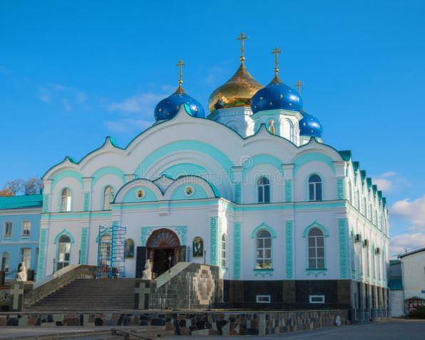
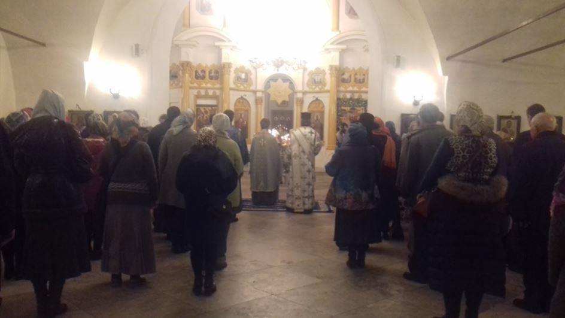
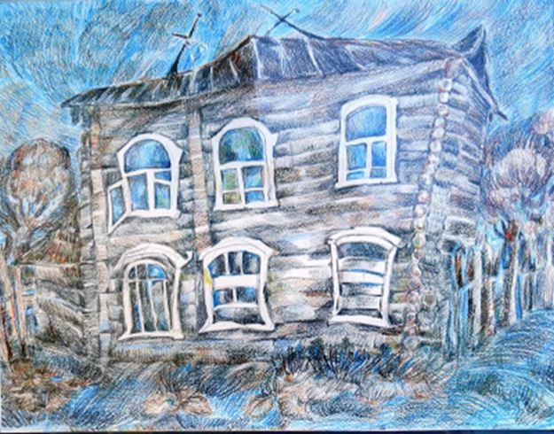

Sur la route de Moscou, j’ai pris en stop un moine édenté et loqueteux avec un gros sac. Il rentrait dans son monastère, près de Saint-Pétersbourg et de Valaam, et avait besoin d’être déposé gratis à l’embranchement de la « bétonka » qui l’amènerait du côté de Tver, sur la route ad hoc. Il semblait avoir beaucoup d’amour pour son higoumène. Nous avons parlé de tout et de rien orthodoxes et entre autres, des églises en urgent besoin de restauration, des gâteaux d’anniversaire inutiles bâtis on ne sait pourquoi, et des restaurations malheureuses. « Pourquoi, lui dis-je, s’il existe pour les restaurations une commission moscovite si pointilleuse, a-t-on laissé édifier aux Solovki, dans l’église du XVI° siècle construite par le métropolite Philippe, une iconostase hideuse, boursouflée et aveuglante d’or, autour d’icônes moches et disparates ?
- Les iconostases de ce genre, c’est à cause des bienfaiteurs…
- Ah, vous voulez dire les sponsors qui financent et qui ont un goût épouvantable ?
- Ils tiennent à ce que cela fasse riche, comme eux…
- Et la commission de Moscou, elle laisse faire ?
- Eh bien, parce qu’ils sont riches, ils achètent qui ils veulent… »
Il m'a appris que l'iconostase en céramique du monastère de Zadonsk avait été commandée en 1905 en France. Détruite puis restaurée par un mécène, qui en a restauré cinq en tout, en Russie, et a donné à ses enfants les noms des saints auxquels étaient consacrés les monastères ou les églises objets de ses largesses.
Le moine, en me quittant, m’a demandé mon nom pour prier pour moi.
Je suis arrivée à Moscou et après une escale à « l’autocentre » Renault de Mytichi, je suis allée aux vêpres de mon église de Krasnoselskaïa. Outre qu’elleest restaurée avec goût, elle, elle a aussi un joli jardin décoiffé qui évite les pièges du petit massif où les fleurs sont alignées comme des chiffres sur un tableau Excel. Beaucoup de gens, même religieux, ne supportent la nature que transformée et contrainte, comme d’ailleurs les enfants qui doivent être obligatoirement bien peignés et assis sur les bancs d’une école.

La Protection de la Mère de Dieu à Krasnoselskaïa
Je convoite depuis longtemps un rejet du magnifique églantier blanc de ce jardin, et il en fait plein, mais je n’ai jamais pu trouver la jardinière, et le père Valentin ne pense pas à s’en occuper, j’ai essayé auprès du père Valéri, on verra bien…
Le père Valentin a évoqué à table avec fureur les responsabilités russes dans le désastre du tomos ukrainien, nous avons maintes fois offensé les Grecs, et voilà. C’est bien possible, mais les raisons les plus importantes, outre la soif de vengeance et de gloriole du pape du Phanar, c’est qu’il est entièrement sous la coupe américaine, ce que l’actualité démontre sans équivoque, même quand on essaie de faire croire le contraire…
Il a dit aussi que l'affaire Ukrainienne était pour le patriarche Cyrille une tragédie personnelle, dont il souffrait profondément et sincèrement.
A la liturgie du matin, le père Théodore (que j’adore, mais j’aime tous les prêtres de Krasnoselskaïa) m’a communiée sous le nom de Lavrentia. Eh bien finalement, après y avoir renoncé, j’accepte ce nom, presque un nom de moniale, et un bon compromis entre mon nom français et ma russification partielle. Cela m’a même donné une grande joie.
J’ai pris avec moi au retour une artiste-peintre, Ioulia, une amie de Yelena Andreïevna Afanassieva. Elle veut louer la moitié de ma maison au mois de juillet, pour elle et sa mère, et ne savait plus à quel saint se vouer, car elle a eu toutes sortes d’avanies avec ses logements de vacances, je vais donc leur fournir celui de cette année. Elle a fait de nombreux dessins au crayon de couleur des maisons détruites ou en perdition de Pereslavl, et voudrait les exposer quelque part. Elle m’en a montré un, que j’ai trouvé très joli. Ce sera pour moi aussi une possibilité de m’absenter un peu sans laisser les chats tout seuls. J’ai commandé une cuisine. Mes hôtes auront un appartement indépendant.
Ioulia m’a dit que ses considérations sur le massacre des jolies maisons de Pereslavl lui avaient valu une grande hostilité, même chez le personnel du musée local : « Vous vous êtes gobergés à Moscou, alors laissez-nous en profiter à notre tour ! » Car évidemment, bâtir une horreur pseudo occidentale ou recouvrir de plastique la jolie maison de la grand-mère, c’est accéder à l’empyrée de la classe supérieure.

Le dessin de Ioulia
Hier, l’Europe votait, et je me suis abstenue. Depuis plusieurs mois, j’essayais de me convaincre d’aller m’inscrire sur les listes de l’ambassade, mais autant j’avais tout fait pour voter aux présidentielles, autant je manquais cette fois de conviction, cette conviction qui m’aurait poussée à prendre rendez-vous dans le blockhaus haïssable de la Yakimanka. D’abord, aucun des candidats ne m’inspire une grande confiance, et j’en ai marre de faire barrage. Le seul pour qui j’aurais voté à la rigueur, c’est Dupond-Aignant. Et puis à vrai dire, je pense que tout ceci est une gigantesque arnaque et je n’ai pas envie de donner satisfaction à ceux qui font semblant de nous consulter. Comme beaucoup de gens, j’ignore les arcanes de la politique, et l’on s’emploie à me laisser dans cette ignorance. Mon instinct m’avertit que telle ou telle personne, c’est l’enfer incarné, mais celle pour qui je vais voter n’est-elle pas aussi un leurre ? Enfin la notion même de parti me fait horreur, la démocratie me fait horreur, la démocratie, c’est la guerre civile larvée ou déclarée, l’atomisation des individus, et je suis pour la communauté monarchique médiévale, qui permet au peuple de rester un tout organique et de s’occuper de son âme, au lieu de perdre son temps et ses forces à entre-déchirer pour le plus grand bien d’oligarques mafieux immondes qui sont l'aboutissement obligatoire du principe démocratique et dont nous protégeaient nos rois et nos tsars. La fin du monde est à nos portes, et comme dit le père Costa de Beauregard, il s’agit de se concentrer sur l’essentiel.
L’idée démocratique est l’arme fatale contre les défenses naturelles d’un peuple, contre son unité et son génie. Elle a causé plus de morts et de massacres dans le monde entier que toutes les monarchies réunies. Et elle est à l’origine de la perdition définitive de l’Europe, qui se produit sous nos yeux.
Partager cette page